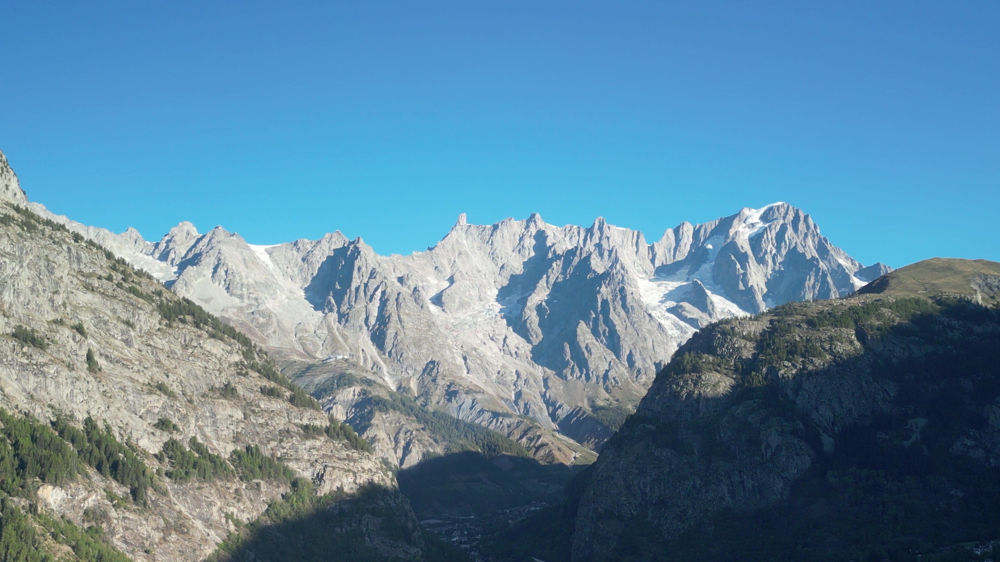

<!DOCTYPE html>
<!-- Banner del canal de YouTube de Orbis Ways (2560×1440).
     Variantes por URL: banner.html?v=mosaico | blanco | panoramica
     Zona segura de YouTube (lo único que se ve en móvil): 1546×423 centrada.
     Escritorio enseña 2560×423 (franja central); TV, el lienzo entero. -->
<html><head><meta charset="utf-8">
<title>Banner YouTube Orbis Ways</title>
<style>
  @font-face{font-family:'Manrope';font-weight:800;src:url('../../scripts/orbisways_style/fonts/manrope-latin-800-normal.woff2') format('woff2');}
  :root{
    --azul-oscuro:#1376A4; --azul-claro:#3B9CCA; --gris:#222222; --blanco:#FFFFFF;
    --W:2560px; --H:1440px;
    --franja-top:508px; --franja-h:423px;      /* (1440-423)/2 */
    --segura-left:507px; --segura-w:1546px;   /* (2560-1546)/2 */
    --gap:22px; --radio:30px;
  }
  *{margin:0;padding:0;box-sizing:border-box;}
  html,body{width:var(--W);height:var(--H);overflow:hidden;background:var(--gris);}
  #lienzo{position:relative;width:var(--W);height:var(--H);overflow:hidden;}
  .web{font-family:'Manrope',sans-serif;font-weight:800;letter-spacing:0.01em;line-height:1;}

  /* ---------- mosaico (oscuro y blanco) ---------- */
  .fila{position:absolute;left:0;right:0;top:calc(var(--franja-top) + var(--gap));
        height:calc(var(--franja-h) - 2*var(--gap));}
  .caja{position:absolute;top:0;height:100%;border-radius:var(--radio);overflow:hidden;}
  .caja img{width:100%;height:100%;object-fit:cover;display:block;}
  .marca{display:flex;flex-direction:column;align-items:center;justify-content:center;gap:40px;}
  .marca img{width:560px;height:auto;object-fit:contain;}
  .marca .web{font-size:50px;}

  body.mosaico{background:var(--gris);}
  body.mosaico .marca{background:var(--blanco);}
  body.mosaico .marca .web{color:var(--azul-oscuro);}

  body.blanco{background:var(--blanco);}
  body.blanco .marca{background:var(--azul-oscuro);}
  body.blanco .marca .web{color:var(--blanco);}

  /* ---------- panorámica ---------- */
  /* La foto baja 300 px para que el logo quede sobre cielo limpio; el cielo se prolonga hacia arriba con su mismo degradado */
  .pano{position:absolute;inset:0;background:linear-gradient(180deg,#2C68A6 0px,#3F80BF 300px);}
  .pano img.foto{position:absolute;left:0;top:300px;width:2560px;height:1440px;object-fit:cover;
    -webkit-mask-image:linear-gradient(180deg,transparent 0,#000 160px);mask-image:linear-gradient(180deg,transparent 0,#000 160px);}
  .pano .velo{position:absolute;inset:0;
    background:linear-gradient(180deg, rgba(19,118,164,0.0) 30%, rgba(19,118,164,0.38) 42%, rgba(19,118,164,0.30) 54%, rgba(19,118,164,0.0) 62%, rgba(10,30,45,0.30) 100%);}
  .pano .marca{position:absolute;left:var(--segura-left);width:var(--segura-w);
    top:calc(var(--franja-top) + 40px);height:220px;gap:30px;}
  .pano .marca .web{color:var(--blanco);font-size:46px;}
</style></head>
<body>
<div id="lienzo"></div>
<script>
const v = new URLSearchParams(location.search).get('v') || 'mosaico';
document.body.className = v;
const L = document.getElementById('lienzo');
const LOGO = '../../scripts/orbisways_style/logo/orbisways_logo_' + (v === 'mosaico' ? 'color' : 'white') + '.png';
const marca = () => `<div class="web">orbisways.com</div>`;

if (v === 'panoramica'){
  L.innerHTML = `<div class="pano"><div class="velo"></div>
                 <div class="marca">${marca()}</div></div>`;
} else {
  // 5 cajas: 2 fotos fuera de la zona segura (solo escritorio/TV), 2 fotos dentro y la marca en el centro
  const W = 2560, g = 22, sl = 507, sw = 1546, marcaW = 660;
  const mx = (W - marcaW) / 2;
  const interior = mx - g - sl;                 // ancho de la foto dentro de la zona segura
  const cajas = [
    {x: g, w: sl - 2*g, foto: 'costa_fishermans.jpg', pos: '60% 50%'},
    {x: sl, w: interior, foto: 'pareja_senior.jpg', pos: '42% 30%', fx: 'brightness(1.1) saturate(1.15) contrast(1.04)'},
    {x: mx, w: marcaW, marca: true},
    {x: mx + marcaW + g, w: interior, foto: 'mujer_montblanc.jpg', pos: '72% 40%'},
    {x: sl + sw + g, w: W - (sl + sw) - 2*g, foto: 'senderista_highlands.jpg', pos: '62% 60%'},
  ];
  L.innerHTML = '<div class="fila">' + cajas.map(c => c.marca
      ? `<div class="caja marca" style="left:${c.x}px;width:${c.w}px">${marca()}</div>`
      : `<div class="caja" style="left:${c.x}px;width:${c.w}px"></div>`).join('') + '</div>';
}
Promise.all([document.fonts.load('800 50px Manrope'), ...Array.from(document.images).map(i => i.decode())])
  .then(() => document.fonts.ready).then(() => { window.__READY__ = true; });
</script>
</body></html>
